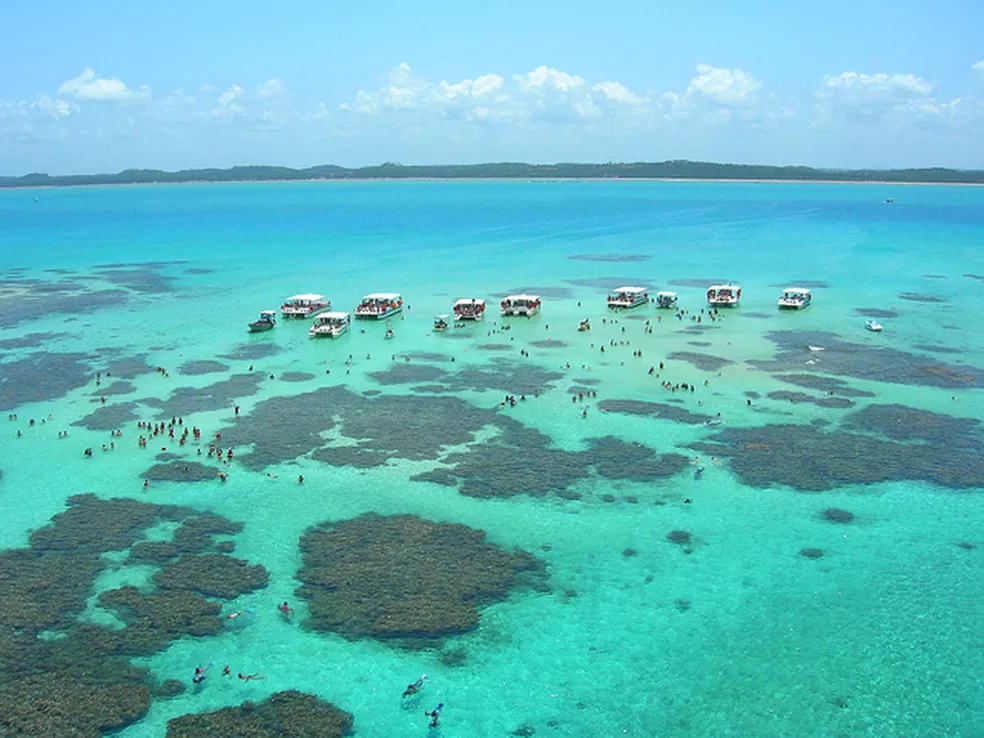
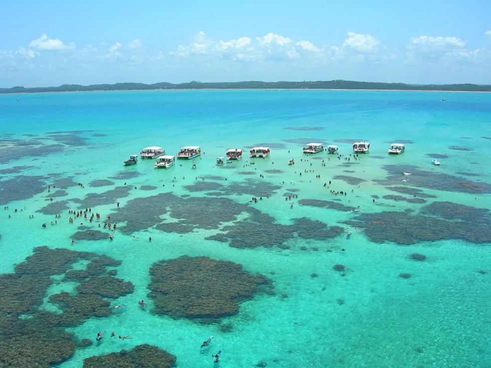
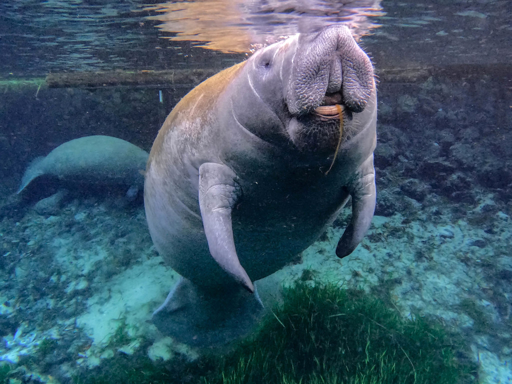
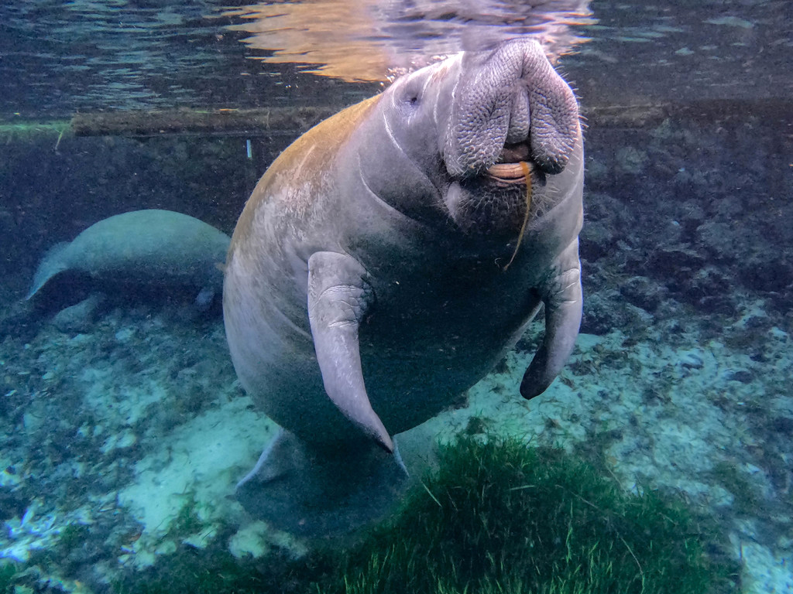

Proteção Costeira
Recifes reduzem a força das ondas em até 0%.
Descubra por que são as cidades mais vibrantes de todo o oceano.
Os recifes de corais são ecossistemas extremamente ricos e biodiversos, conhecidos como as “florestas tropicais do mar”. Formados por colônias de pequenos animais chamados pólipos, eles constroem estruturas que servem como abrigo, alimentação e proteção para milhares de espécies marinhas.
Recifes reduzem a força das ondas em até 0%.
Os recifes servem como casa, refúgio e berçário para peixes, crustáceos e outros animais marinhos.
Mesmo cobrindo menos de 1% do oceano, abrigam cerca de 0% de todas as espécies marinhas.
As cores dos corais vêm das algas simbióticas que vivem neles — uma parceria essencial para o ecossistema.
Um aumento de apenas 0°C pode causar branqueamento dos corais.
Piscinas naturais de Porto de Galinhas — arrecifes visíveis na maré baixa.
A causa mais séria do branqueamento dos corais.
Plásticos, produtos químicos e esgoto prejudicam o ecossistema.
 

 

Cores vibrantes, vida intensa os recifes são um espetáculo natural.